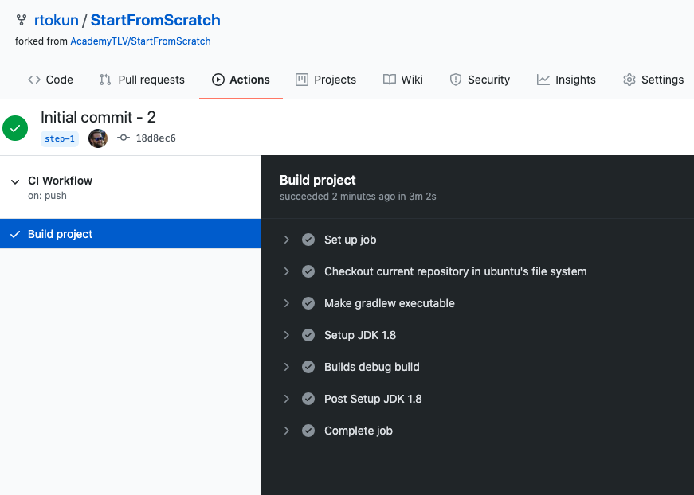

An environment variable is a dynamic-named value that can affect the way running processes will behave on a computer.
export MY_ENVIROMENT_VARIABLE = some_value
bashrc file - your bash config file:export MY_ENVIROMENT_VARIABLE = some_value
// TODO Nitzan - continue from here
1. Go to project and a directory .github in the root.
2. Inside it, create another directory called workflows (This is where all the GitHub Actions configuration files go).
3. Create first configuration file workflow_1.yaml.
4. Open it and add next code:
name: "CI Workflow"
on: [push]
jobs:
build:
name: "Build project"
runs-on: ubuntu-latest
steps:
- name: "Checkout current repository in ubuntu's file system"
uses: actions/checkout@v1
- name: "Setup JDK 1.8"
uses: actions/setup-java@v1
with:
java-version: 1.8
- name: "Builds debug build"
run: ./gradlew assembleDebug
5. Commit ang push the changes to origin:
git add .
git commit -m "Initial build action add"
git push origin master
6. You should see a result: 